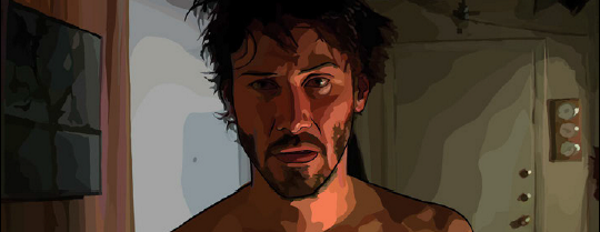

A series of themed media articles.
Promo image from A Scanner Darkly
| Story Title | Parts | Pages | w indicates a wraparound coverCovers | Year(s) | Issues | Writer | Artist | Colourist | Letterer |
|---|---|---|---|---|---|---|---|---|---|
| New Films | 7 | 17 | 0 | 2006 | M247-M253 | Simon Spurrier: 1 Keith Richardson: 2 Alec Worley: 3‑7 various | promo images | <-- | n/a |
Switches title on last episode.New Films / New Movies | 13 | 39 | 0 | 2007 | M254-M266 | Alec Worley | promo images | <-- | n/a |
| New Movies | 13 | 39 | 0 | 2008 | M267-M279 | Alec Worley | promo images | <-- | n/a |
| New Movies | 13 | 39 | 0 | 2009 | M280-M292 | Alec Worley: 1‑6 Andrew Osmond: 7‑13 various | promo images | <-- | n/a |
| New Movies | 11 | 33 | 0 | 2010 | M293-M298, M300-M305 | Andrew Osmond | promo images | <-- | n/a |
| New Movies | 12 | 36 | 0 | 2011 | M306-M316, M318 | Andrew Osmond | promo images | <-- | n/a |
| New Movies | 5 | 15 | 0 | 2012 | M319-M323 | Andrew Osmond | promo images | <-- | n/a |
| Future Shock: Past Tense | 1 | 3 | 0 | 2015 | M366 | Matt Smith | promo images | <-- | n/a |
| year | episodes | pages |
| 2000 | 0 | 0 |
| 2001 | 0 | 0 |
| 2002 | 0 | 0 |
| 2003 | 0 | 0 |
| 2004 | 0 | 0 |
| 2005 | 0 | 0 |
| 2006 | 7 | 17 |
| 2007 | 13 | 39 |
| 2008 | 13 | 39 |
| 2009 | 13 | 39 |
| 2010 | 11 | 33 |
| 2011 | 12 | 36 |
| 2012 | 5 | 15 |
| 2013 | 0 | 0 |
| 2014 | 0 | 0 |
| 2015 | 1 | 3 |
| 2016 | 0 | 0 |
| 2017 | 0 | 0 |
| 2018 | 0 | 0 |
| 2019 | 0 | 0 |
| 2020 | 0 | 0 |
| 2021 | 0 | 0 |